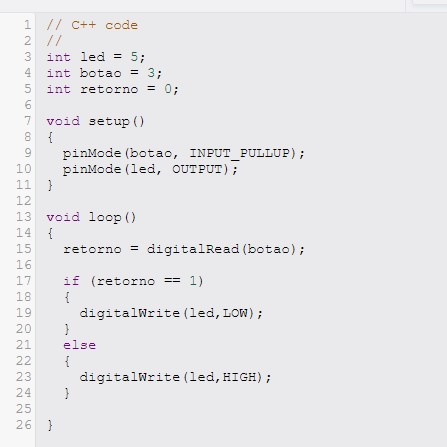

Objetivo
Controlar o estado de um LED (ligado/desligado) utilizando um botão de pressão. O LED acende quando
o botão é pressionado e apaga quando o botão é solto.
Materiais Utilizados
Arduino Uno R3 (Placa microcontroladora)
Protoboard (Realizar as conexões sem necessidade de solda)
LED (Para indicar o estado do botão)
Botão de Pressão (Para controlar o estado do LED)
Jumpers (Fios de conexão)
Diagrama do Circuito
Neste projeto, um botão de pressão é utilizado para controlar o estado de um LED simples. Quando o botão
é pressionado, o LED acende. Quando o botão é liberado, o LED se apaga. A lógica é baseada na leitura
digital do botão, usando o resistor de pull-up interno do Arduino, configurado no pino de entrada do botão.
O botão está conectado ao pino digital 3 do Arduino, e o LED está conectado ao pino digital 5. O resistor
pull-up interno garante que o valor lido no pino do botão seja 1 (alto) quando o botão não está pressionado,
e 0 (baixo) quando o botão está pressionado.
Código Fonte & Procedimento
Código em C++ utilizando a IDE do Arduino.
1- Conecte o LED ao pino digital 5 do Arduino, utilizando um resistor em série para proteger o LED.
2- Conecte o botão de pressão ao pino digital 3 do Arduino. A configuração do resistor pull-up interno
é ativada no código com pinMode(botao, INPUT_PULLUP), eliminando a necessidade de um resistor externo.
3- No código, o pino do botão é lido digitalmente com digitalRead() para detectar se o botão está
pressionado ou não.
4- O valor lido do botão (alto ou baixo) determina o estado do LED: se o botão não estiver pressionado,
o LED permanecerá apagado; se o botão for pressionado, o LED acenderá.
5- O ciclo continua indefinidamente no loop(), permitindo o controle contínuo do LED com base nas
interações com o botão.
Resultados & Conclusão
Após carregar o código e montar o circuito, o sistema funcionou conforme esperado. O LED acendeu ao
pressionar o botão de pressão e apagou ao soltar o botão.
Este projeto simples é uma introdução ao uso de botões de pressão. Demonstrou como podemos controlar
dispositivos (como LEDs) com base em entradas digitais, sendo útil em aplicações como controles manuais
de dispositivos eletrônicos.